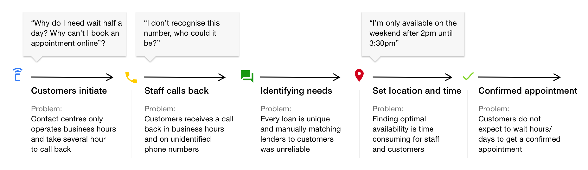
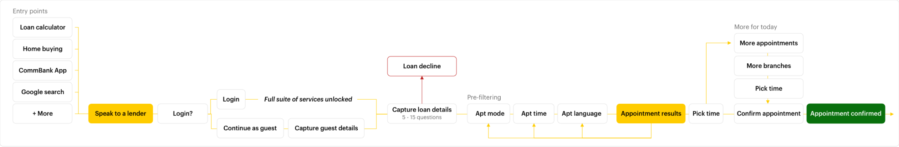

Customer journey and pain-points

User flow
Below: The flow starts at various entry points from our website/app that leads to authentication. Capturing basic loan details allows us to understand customer needs so that we may appropriately match customers to a lender.

Pen to paper
I always start with pen to paper with the ultimate goal of sorting through my thoughts and working through scenarios. Below are some very rough sketches.